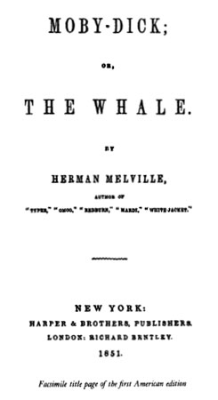

This Penguin Classics edition of Melville’s Moby-Dick reproduces the authoritative Approved Text of the Center for Scholarly Editions (Modern Language Association of America), published by the Northwestern University Press and the Newberry Library in 1988 and edited by Harrison Hayford, Hershel Parker, and G. Thomas Tanselle.
